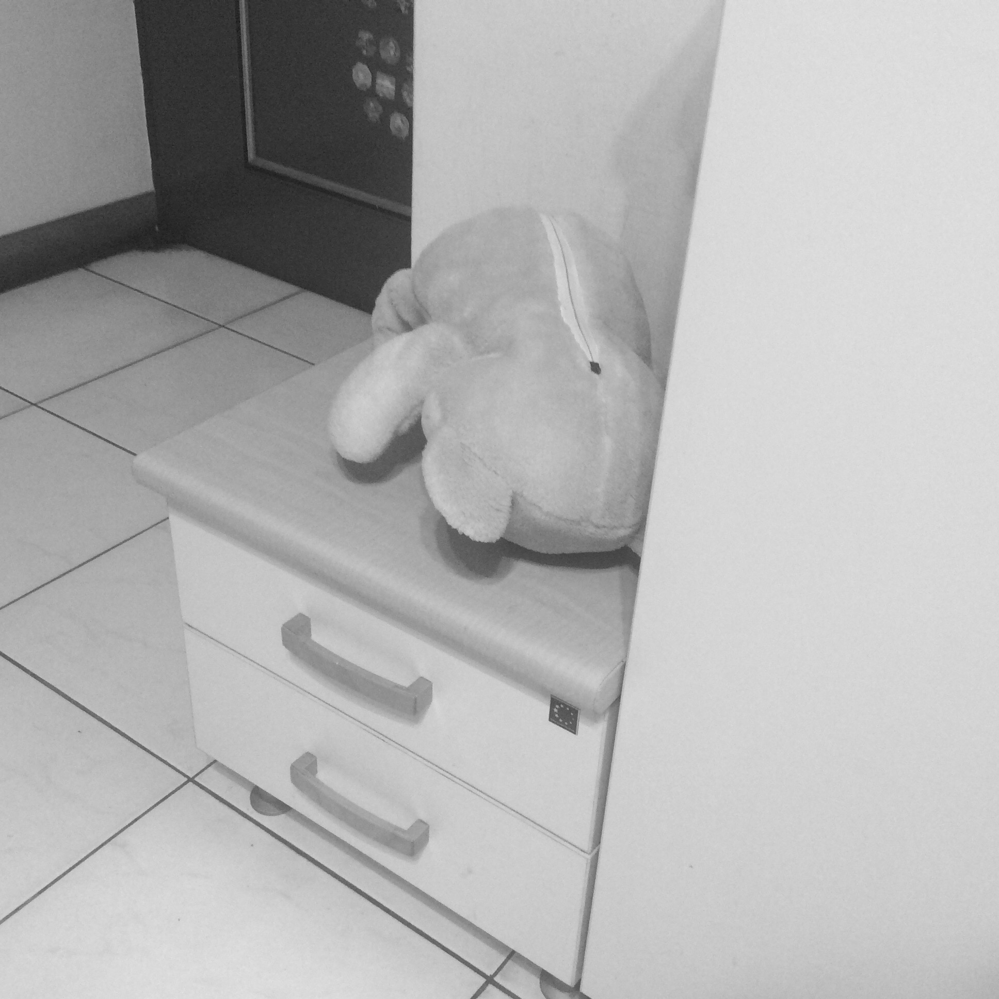

感情
 「要我說幾次！不要放感情！不要放感情！」
製作人用力摔下耳機，對著歌手咆嘯，若不是歌手是演而優則唱的當紅演員，他恨不得一巴掌打在這個人臉上。
被罵了一整天的歌手抿著嘴唇，還是忍不住落了幾滴淚，製作人更火大了。
「你他媽哭什麼哭！放什麼感情！就叫你不要放感情！」
氣到沒力的製作人嘆了口氣，向助理招招手。
「妮妮，把那個拿來。」
一旁待機的助理早就機靈地拿了髮圈，遞給製作人。製作人接過髮圈，走到歌手後面把他的長髮一把抓起，無比用力地幫他綁了一個馬尾，用力到歌手整個臉部的肉都被往後拉起，漂亮的大眼睛成了鳳眼。
「好了，你再唱一遍看看，記住，不要放感情，唱歌流露感情的連三流都算不上。」
綁了馬尾的歌手這次錄音一次就過了，大夥開心地慶祝專輯錄音階段完成，吃了一頓大餐，喝得東倒西歪，其中最醉的是製作人。
聚餐結束後，妮妮扛著製作人到計程車上，給司機講了一個地址。
醉昏昏的製作人在計程車上突然開始大哭，妮妮連忙哄他，駕駛座的司機心裡感嘆著自己的運氣真差，載到這種客人，譴責一般地偷偷用後照鏡瞪了一眼正在大鬧的製作人，卻發現製作人其實戴假髮。